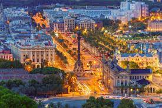

Barcelona
La ciudad es un foco de nuevas tendencias en el mundo de la cultura, la moda y la gastronomía. Combina la creatividad de sus artistas y diseñadores con el respeto y cuidado por los locales tradicionales de siempre. En ella, conviven el encanto y la pausa de su casco histórico, la vanguardia de sus barrios más modernos y el ritmo urbanita de una de las ciudades más visitadas del mundo.
Cosasa que puedo hacer mientras estoy de visita en Barcelona:
Barcelona es un escaparate a las últimas novedades en moda. Pasear por sus calles es descubrir un mundo de posibilidades para una jornada de shopping. Desde zonas llenas de glamour y grandes firmas con tiendas icónicas en edificios emblemáticos, como por el paseo de Gracia o la avenida Diagonal, hasta diseños alternativos e innovadores en zonas como el barrio del Born. Además, en Barcelona abundan los comercios tradicionales y tendrás la oportunidad de visitar tiendas centenarias y ateliers que sorprenden por su atención al detalle.
- Barcelona atrae por sus monumentos imprescindibles como la Sagrada Familia, el Park Güell, la Casa Batlló o la Pedrera
- Entrar en el Templo Expiatorio de la Sagrada Familia
- El Barrio Gótico, situado en pleno centro, es el barrio más antiguo y bonito que ver en Barcelona.
- La oferta gastronómica también es muy variada
- Nuestro edificio favorito que visitar en Barcelona es la Casa Batlló, Patrimonio de la Humanidad y una de las mejores obras de Gaudí en Barcelona.
- Subir a alguno de sus miradores naturales o situados en edificios para ver el atardecer sobre la ciudad o simplemente disfrutar de las vistas.
- Los paseos junto al mar, las noches en las azoteas con vistas al skyline de la ciudad, amplios espacios verdes como el Parc de Montjüic o Ciutadella, el puerto deportivo, el Barcelona olímpico o todo cuanto rodea al FC Barcelona son posibilidades para vivir nuevas experiencias en cada visita.
- Subiendo por el Paseo de Gràcia desde la emblemática Plaza de Cataluña llegarás a Casa Milà, otra de las obras más famosos de Gaudí que visitar en Barcelona.
- El Park Güell, declarado Patrimonio de la Humanidad, es uno de los parques más bonitos del mundo
- Una de las cosas que hacer en Barcelona más populares es dar un tranquilo paseo por Las Ramblas o La Rambla.

De esta ciudad me gustan mucho como son de perfectas sus calles y sus cuadras,su gran arquitectura, sus monumentos,
como la sagrada familia, y el acento de las personas que tanto me intriga, asi como su gastronomia.